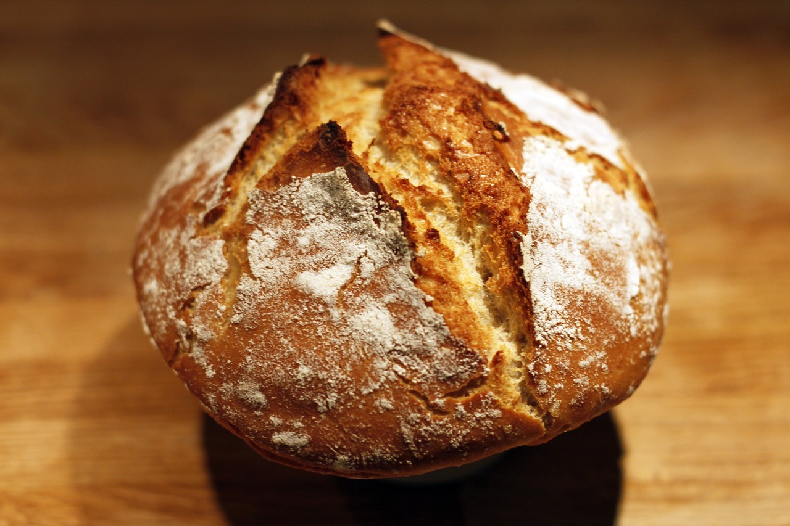

Pão Rústico

Este é um site sobre pães, usando fermentos biológico ou natural(levain)
Utensílios Recomendados:
- Bowl
- Balança Digital exemplo
- Espátula meia-lua
- Lâmina de padeiro (pode usar uma lâmina de barbear)
- Pano de Prato
Receitas
Pão Italiano
Ingredientes
- 100 gr Levain ativado
- 500 gr Farinha
- 6 gr Sal
- 300 gr Água